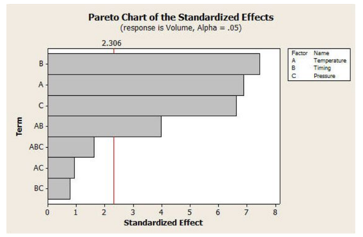
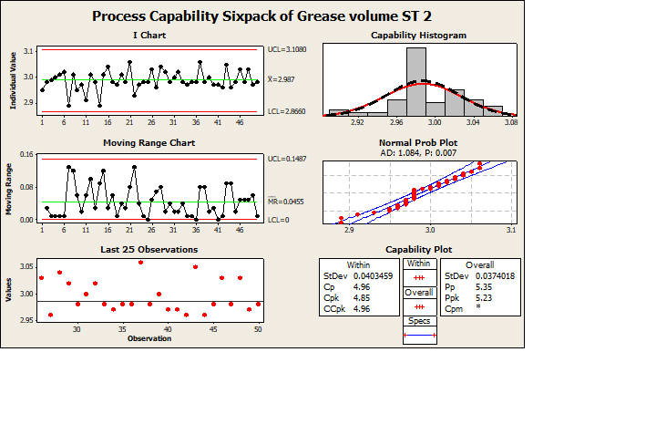

工程案例 · 以实际数据为基础
调好每一滴
润滑脂。
通过本 DOE 案例，理解温度、点胶时间和压力与润滑脂出胶量的关系。
从案例开始↓DOE 案例学习GREASE DISPENSING / 2024.07.22
DISPENSE / 01CONTROL THE PROCESS
DOSE / mg3.00VOLUME RESPONSE
TEMP 60–90°CTIMING 50–80 msPRESSURE 4.5–5.5 bar
DOE
LEARNING
01
LEARNING
01
CONTROL THE INPUT × MEASURE THE OUTPUT × LEARN FROM VARIATION × CONTROL THE INPUT × MEASURE THE OUTPUT × LEARN FROM VARIATION ×
01 — 理解案例
原始资料 · 第 2 页先认识
我们要控制什么。
这份 DOE 教学案例展示输入参数与响应值的关系。它用于学习分析流程，不能直接作为其他设备、材料或工况的通用配方。
实验目标定义并验证工艺参数原始资料第 2 页
响应值Volume （体积）原始资料第 6 页
优化目标3 mg 目标值原始资料第 13 页
设备信息（作者补充，参考图片；原始 PDF 未注明）：EFD PICO Pµlse® 点胶阀；图片中同时可见 PICO Toµch® 控制器。实际安装配置、胶脂品牌与粘度：待图纸核实，资料未提供。
∿∿∿∿∿∿
低 / 高设置值依据原始第 5 页 Minitab Factors 截图；第 2 页说明相同范围。
02 — 看懂实验设计
原始资料 · 第 6 页DOE 是
有计划地
学习过程。
每次改变预先设定的参数组合，再测量同一个响应。对比组合之间的变化，可以发现哪些输入可能和出胶量有关。
DOE / Design of Experiments
让实验按计划改变因素、收集响应，并从数据中判断过程关系的一种方法。
TEMP+TIMING+PRESSURE→VOLUME
设计名称需复核
原资料称“3 factorial (Full factorial)”，但数据表有 16 次运行，温度和 Timing 各有 4 个取值。资料未解释与常见 2³ = 8 次全因子设计的差异；此页照录原始数据，不推断设计结构。
3个因素
16次运行 · 表中记录
01区组 · 表中记录
运行顺序与 Standard Order 保留原表记录。浏览器表格横向滚动可查看完整列。
RUN LOG / 全部运行
原始资料 · 第 6 页实验矩阵
| StdOrder | RunOrder | CenterPt | Blocks | Temperature °C | Timing ms | Pressure bar | Volume unit not provided |
|---|
* 原表列名为 Volume；数值单位显示为 mg 的依据是第 13 页的 3 mg 优化说明。表中数字依照原图逐项转录。资料未提供重复测量或运行随机化说明。
03 — 从数据中学习
原始资料 · 第 7、13 页让每个点
都能说话。
这里的散点来自 16 次原始运行。趋势线只是将 Temperature、Timing、Pressure 分别与实测 Volume 对照的均值，不代表 Minitab 模型或因果效应。
每次运行分组均值（描述性）
散点横轴为所选因素值，纵轴为实测 Volume。选择下方因素切换图表。
PDF 第 7 页的 Pareto 图将 B（Timing）、A（Temperature）、C（Pressure）、AB 标为超过 2.306 参考线的显著效应。此处不重算或延伸显著性结论。

MINITAB · RESPONSE OPTIMIZER
目标值3.0 mg
↗
温度60 °C
点胶时间50 ms
压力5.16 bar
优化器预测：Temperature = 60.0048 °C，Timing = 50.0121 ms，Pressure = 5.1631 bar；预测 Volume = 3，desirability = 1。原始投影片简写为 60 °C / 50 ms / 5.16 bar。
原始资料 · 第 13 页确认实验结果：资料未提供。
04 — 交互式探索
基于资料计算 · 教学演示试着改变
一个参数。
移动滑杆，观察实测数据如何随单一因素分组变化。数值是原始运行的组内平均，右侧虚线只是对附近已测试运行的线性插值。
60 °C90 °C
50 ms80 ms
4.5 bar5.5 bar
近邻实测数据 · 描述性平均值
—Volume单位资料未提供
相同参数组合的实测运行—
相同温度与 Timing 的已测运行—
交互值来自 PDF 第 6 页的实测运行分组平均，不是优化器预测，也不是额外实验结果。只显示资料中实际测试过的因子水平；若没有同一三因子组合，按相邻压力水平插值并明确标出。
05 — MINITAB WORKFLOW
原始资料 · 第 3–5、8–12、14–16 页从问题，走到
可复核的实验。
下列步骤转述 PDF 中的操作说明。当前官方帮助仍列出相同 DOE 菜单路径；截图来自 2024 年资料，可能与新版对话框外观不同。按你的 Minitab 桌面版或 Web 版界面核对。
06 — 别忘了确认
原始资料 · 第 17 页一个好参数，
要靠现场确认。
优化器给的是模型建议。把它带回工位，重新测量，再比较改进前后的数据。
确认实验状态 · 待现场验证PDF 提出了后续行动计划，但没有提供重采数据、前后比较或“正向结果”的证据。
资料未提供07 — 推荐参数后的 SPC 验证
作者补充图 · 原始 PDF 未包含用 SPC 观察
推荐参数下的过程。
作者补充的 Capability Sixpack 截图记录了按 Minitab 推荐参数运行后的润滑脂输出监控。
截图中的关键读数
I 图中心线2.987
Cpk · within4.85
Ppk · overall5.23
AD 正态性检验 p 值0.007

08 — QUICK CHECK
新增教学内容检查你的
DOE 直觉。
三道小题。把原则带回下一场实验。
0 / 3 已答对
资料与边界DOE 教育 /
DOE 教育 /
润滑脂点胶案例
原始来源：作者提供的 DOE 教学 PDF（19 页，2024 年 7 月 22 日）。数值数据见原始第 6 页，设计与分析流程见第 2–16 页；页码引用对应原始 PDF。
新增教学说明：DOE 入门解释、数据可视化、单因素均值互动、术语提示、确认实验清单及知识测验。互动仅做数据分组统计与邻近取值插值，不生成资料外的实验记录，不替代 Minitab 分析。
资料未提供：完整预先确定的响应单位/规格依据、因素实际低高水平表、独立重复与随机化记录、原始输出文件、确认实验实测结果及优化前后比较。
© DOE 教育 · 润滑脂点胶案例 19 PAGES / EN ↔ 中文